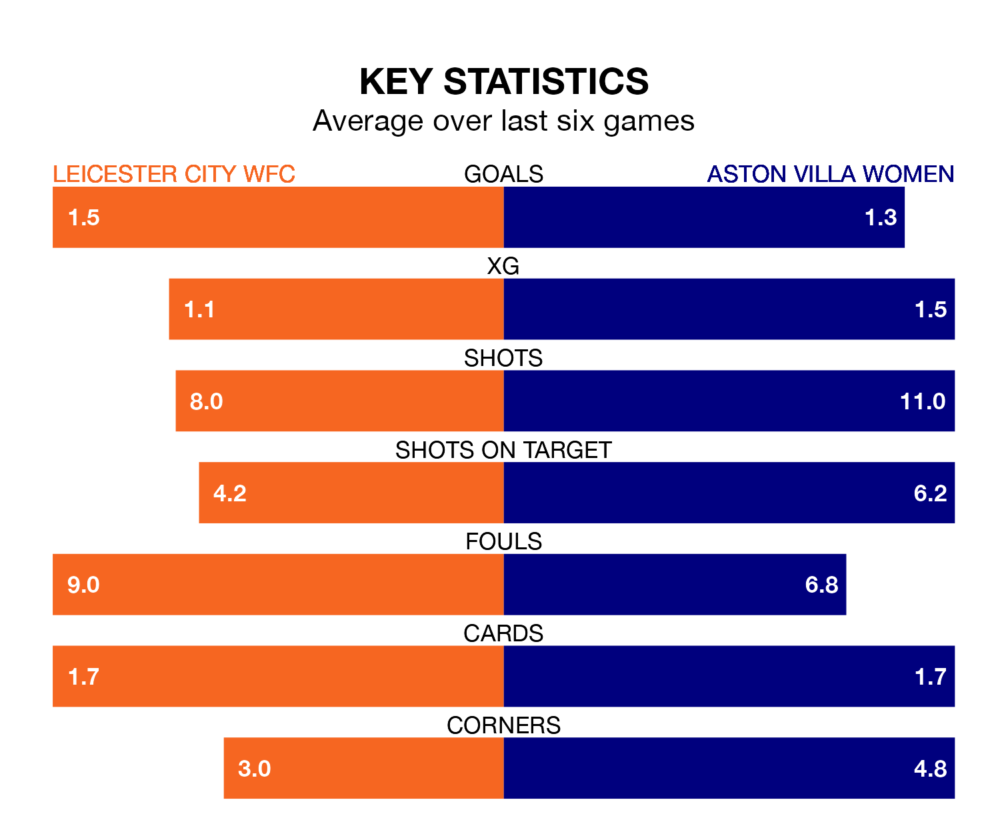

Struggling Aston Villa Women face Leicester City WFC away at the King Power Stadium on Friday looking to build on a win in their last league outing.
After securing all three points with a 1-0 victory over Brighton and Hove Albion Women on December 17, the Villa sit ninth in FA Women's Super League.
They travel to play a Leicester City WFC side eighth in the standings, who were held in their last match, 1-1 against West Ham United Women.
Leicester City WFC are in bad form in FA Women's Super League, with no wins and three draws from their last six games.
With three wins and three losses over that period, Aston Villa's form is much better – they have taken nine points from 18, compared to the hosts' three.
With 12 goals in 10 games so far this season, the Villa are scoring at below the league average rate with 1.2 goals per game. And they are conceding more than average, letting in 22 goals at a rate of 2.2 per game.
Leicester City WFC are also below average scorers, with 1.5 goals per game, compared to a league average of 1.7. They have conceded 2.1 goals per game.
In the last five years, Leicester City WFC and Aston Villa have played each other on six occasions. Aston Villa won five of them and they drew once.
On average, Leicester City WFC scored 0.5 goals and the Villa 2.3 in those matches.
Their last meeting was on March 26, when Aston Villa won 5-0 at home.
With Janina Leitzig between the sticks, Leicester City WFC can rely on one of the league's safest pair of hands. She has kept one clean sheet in her 10 appearances this season in FA Women's Super League.
In the away team's net, Daphne van Domselaar also has one clean sheet in nine games. She has conceded a goal every 43 minutes, 10% more often than the 47 minutes between goals for Leitzig.
Updated: 13:38 (UTC), 10/01/24